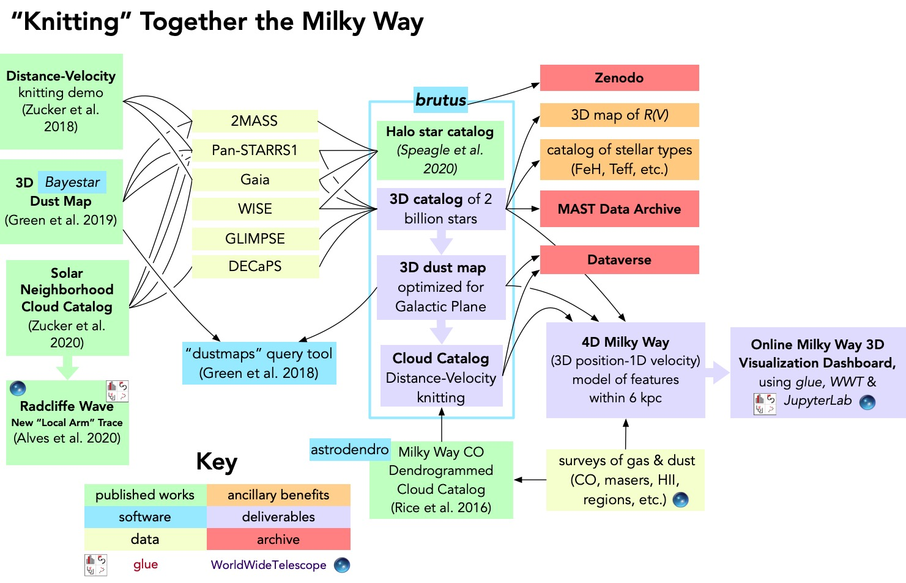

<map name="GraffleExport">
	<area shape=rect coords="211,902,338,954" href="http://glueviz.org/">
	<area shape=rect coords="338,903,558,954" href="http://worldwidetelescope.org">
	<area shape=rect coords="883,106,1142,149" href="https://zenodo.org/">
	<area shape=rect coords="883,402,1142,449" href="https://dataverse.org/">
	<area shape=rect coords="505,717,639,755" href="https://dendrograms.readthedocs.io/en/stable/">
	<area shape=rect coords="313,275,522,313" href="https://sci.esa.int/web/gaia">
	<area shape=rect coords="313,418,522,455" href="http://decaps.skymaps.info/">
	<area shape=rect coords="313,372,522,410" href="http://www.astro.wisc.edu/sirtf/">
	<area shape=rect coords="313,227,522,265" href="https://panstarrs.stsci.edu/">
	<area shape=rect coords="313,323,522,361" href="https://www.nasa.gov/mission_pages/WISE/main/index.html">
	<area shape=rect coords="883,312,1142,372" href="https://archive.stsci.edu/access-mast-data">
	<area shape=rect coords="615,197,824,295" href="http://allsky.s3-website.us-east-2.amazonaws.com">
	<area shape=rect coords="9,622,211,761" href="https://sites.google.com/cfa.harvard.edu/radcliffewave/">
	<area shape=rect coords="9,425,211,582" href="https://www.aanda.org/articles/aa/olm/2020/01/aa36145-19/aa36145-19.html">
	<area shape=rect coords="298,560,549,629" href="https://joss.theoj.org/papers/10.21105/joss.00695">
	<area shape=rect coords="604,723,838,849" href="http://www.astroexplorer.org/details/apj523087f15">
	<area shape=rect coords="313,179,519,217" href="https://irsa.ipac.caltech.edu/Missions/2mass.html">
	<area shape=rect coords="0,260,201,399" href="http://www.astroexplorer.org/details/apjab5362f14">
	<area shape=rect coords="0,87,201,244" href="http://www.astroexplorer.org/details/apjaae97cf11">
</map>

